Maria's ／ AI動画モックアップ v1
山内アレサンドロ 様 ／ 約45秒・実写風 ／ 2026-10-06 ドラフト
ブラジル料理
津・高茶屋
来店集客
本場の家庭の味
フェイジョン
画は仮置きです。お母さまのお顔・鉄板・鍋・内装は、お送りいただく実写に差し替えます。
お母さまは無地のTシャツ（文字なし）。屋号は後から載せます。特定の有名人には似せていません。
案件概要
- 屋号
- Maria's（マリアズ）
- 業種
- 飲食（ブラジル料理）
- 所在地
- 三重県津市高茶屋小森町392-4 2F（高茶屋駅 徒歩15分／駐車場あり）
- 主役
- お母さま＋ブラジル料理（山内様は出演なし）
- 動画尺
- 約45秒（仮置き）
- テイスト
- 実写風。明るい大衆店。落ち着いて会話できる店
- CTA
- 住所＋Google Maps（営業時間・電話は出さない）
訴求ポイント
① お母さまが作る本格ブラジル料理（鉄板の肉＋フェイジョン）
② 家族連れでも気軽に（夫婦・友人・年配の方も）
③ パーティー・女子会・忘年会（40〜50名までご相談）
シーン構成（全12カット・約45秒）
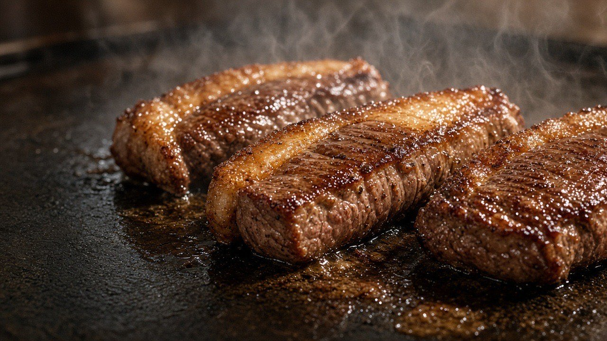
S010:00–0:04／HOOK・料理
（テロップなし・画で見せる）
ナレ：ブラジルの、家庭の味。
絵：鉄板で焼けるお肉。最初の4秒は飯テロ。
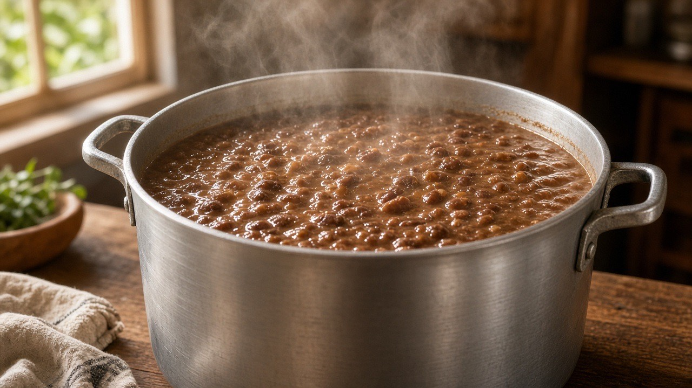
S020:04–0:07／HOOK・フェイジョン
フェイジョン
ナレ：大きな鍋で、豆を煮込む。
絵：毎日の看板であるフェイジョンの大鍋。フェイジョアーダとは別物。
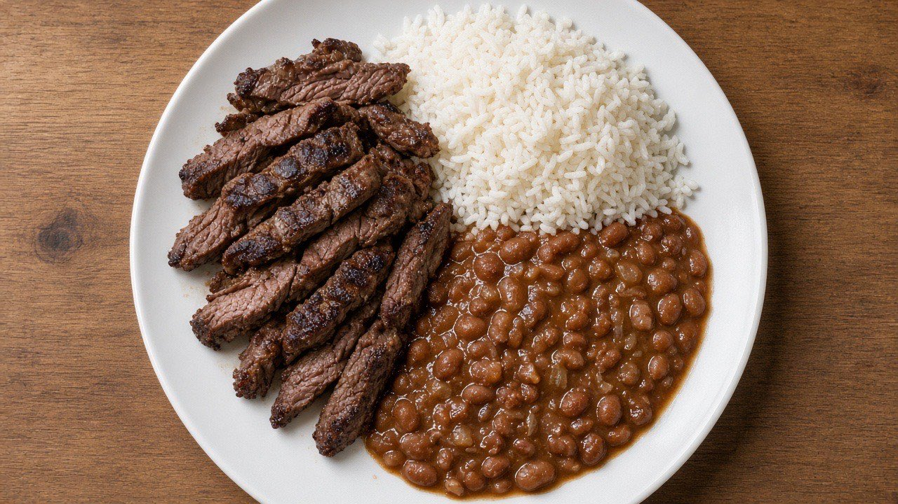
S030:07–0:11／USP
本場の家庭の味
ナレ：本場の人が作る、本場の家庭の味。
絵：鉄板肉とご飯、フェイジョンの盛り付け。
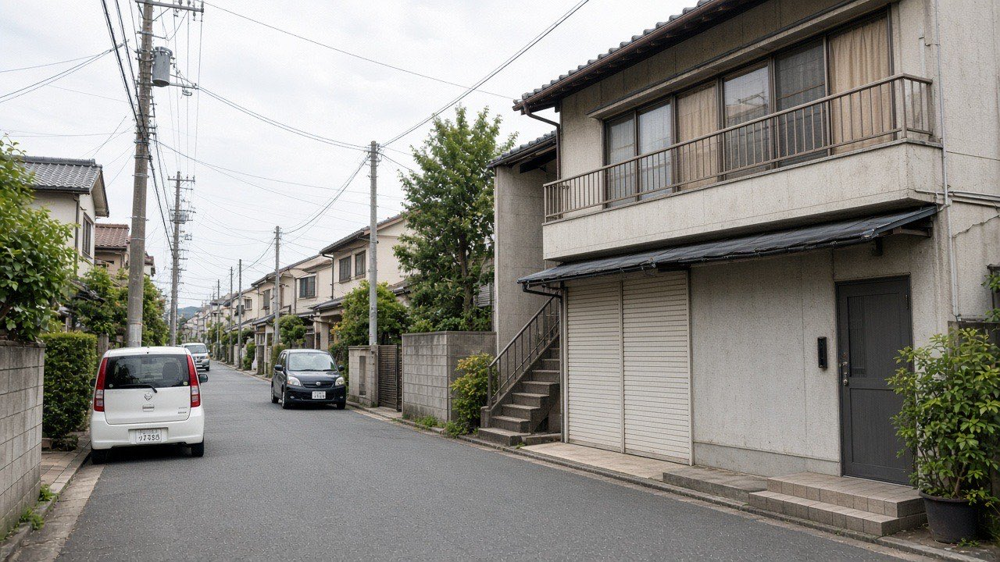
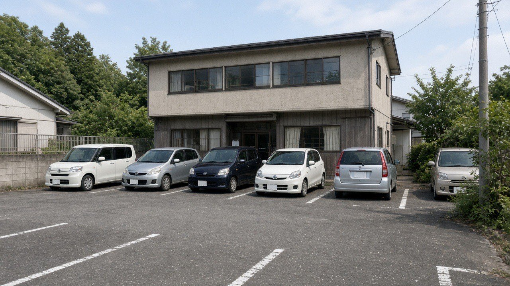
S040:11–0:16／場所
高茶屋駅から徒歩15分／駐車場あり
ナレ：津・高茶屋。駅から徒歩15分。駐車場もあります。
絵：高茶屋の街並みと駐車場。来店は車が主。
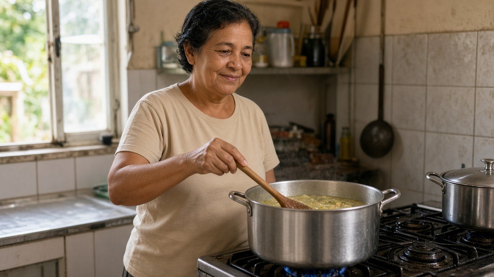
S050:16–0:20／お母さま・調理
（なし）
ナレ：お母さまが、今日も仕込んでいます。
絵：お母さまが鍋を仕込む。顔は実写到着後に差し替え。
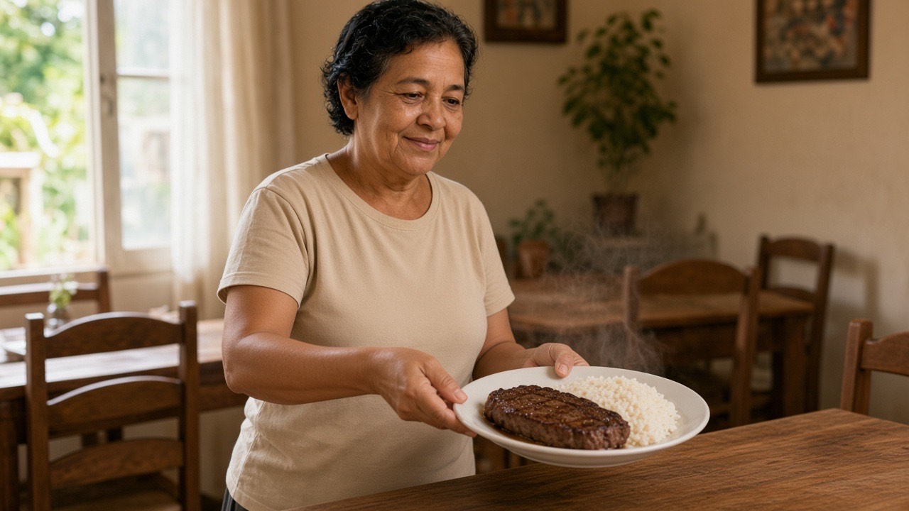
S060:20–0:24／お母さま・提供
（なし）
ナレ：焼きたてを、そのままテーブルへ。
絵：焼きたてのプレートを運ぶ。
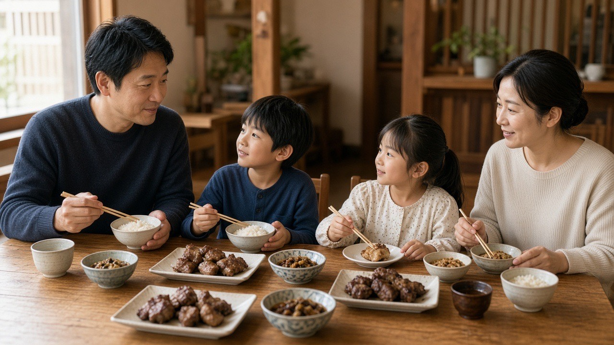
S070:24–0:29／家族
家族連れでも、気軽にどうぞ
ナレ：家族で、話しながら。
絵：3〜4人の家族が落ち着いて食事。
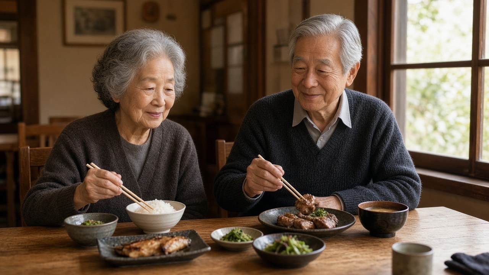
S080:29–0:33／幅広い客
夫婦も、友人も
ナレ：夫婦でも、友人とでも。
絵：年配のご夫婦。友人連れも同じ空気。
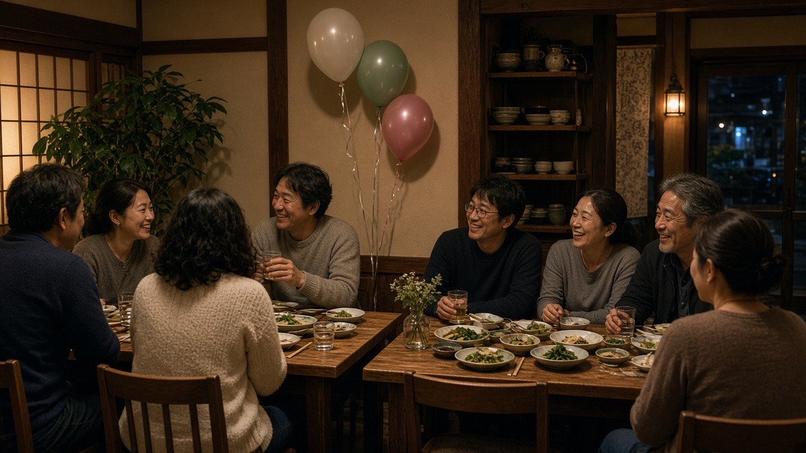
S090:33–0:38／パーティー
パーティー・女子会・忘年会／40〜50名
ナレ：忘年会も、女子会も、ご相談ください。
絵：飾り付けのある集まり。夜のクラブにはしない。
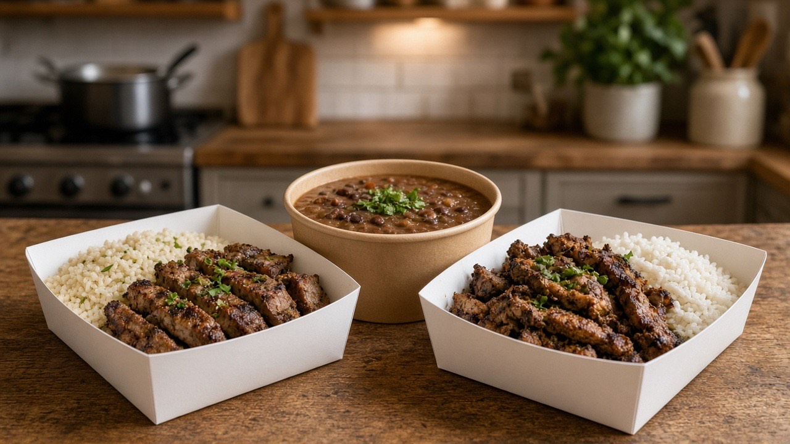
S100:38–0:41／テイクアウト
テイクアウトできます
ナレ：お持ち帰りも、できます。
絵：持ち帰り容器。配達は言わない。
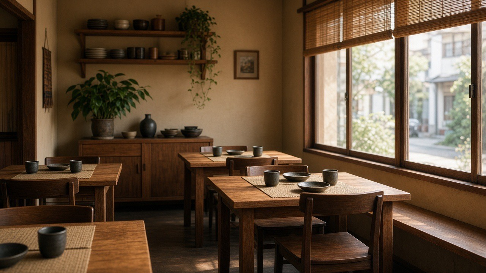
S110:41–0:43／情緒
懐かしい気持ちに
ナレ：懐かしい気持ちに、なれる店。
絵：落ち着いた店内。
S120:43–0:45／CTA
Maria's／三重県津市高茶屋小森町392-4 2F／Google Mapsで検索
ナレ：Maria's。地図で、探してみてください。
絵：店内を背景に、屋号・住所・Mapsを後乗せ。
台本（ナレ全文）
ブラジルの、家庭の味。
大きな鍋で、豆を煮込む。
本場の人が作る、本場の家庭の味。
津・高茶屋。駅から徒歩15分。駐車場もあります。
お母さまが、今日も仕込んでいます。
焼きたてを、そのままテーブルへ。
家族で、話しながら。
夫婦でも、友人とでも。
忘年会も、女子会も、ご相談ください。
お持ち帰りも、できます。
懐かしい気持ちに、なれる店。
Maria's。地図で、探してみてください。
演出のキモ
① 最初の4秒は飯テロ（鉄板の肉 → フェイジョン）
② 次に場所。来店は車が主だが、イオン利用者の目印として駅名は残す
③ お母さまが作り、出す。本場の人が作っていることが分かる
④ 客は幅広いが落ち着いている。騒がしい居酒屋にはしない
⑤ 営業時間は出さない。CTAは住所＋Google Maps
出さないこと
❌ 営業時間（いま手探り中のため）
❌ 配達・Uber Eats
❌ 「日本一」「No.1」
❌ 山内様ご本人の出演
❌ フェイジョンとフェイジョアーダの取り違え
❌ 画像の中に屋号を描く（後乗せ）
ご確認いただきたいこと
- ［仮置き］尺は約45秒。30秒短縮もできます。
- ［仮置き］ナレーションあり（案内する女性ナレ）。音楽のみにもできます。
- ［確認］屋号の読みを「マリアズ」と出すか、英語表記のみにするか。
- お母さまのお顔はお写真到着後に差し替えます。
- CTAは住所＋Google Mapsです。電話・営業時間は入れていません。